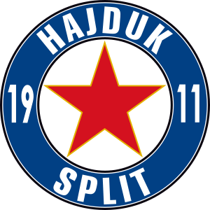
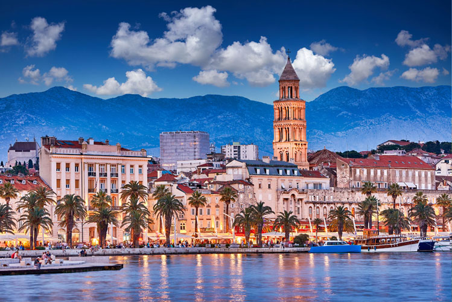
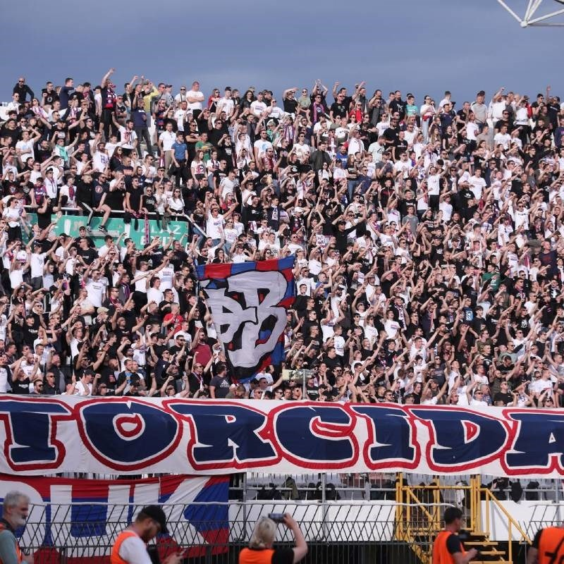

Osnovan
1911. godine
Hrvatski nogometni klub Hajduk Split hrvatski je nogometni klub iz Splita.
Najveće je sportsko društvo u Splitu i jedno od najvećih u Hrvatskoj

Grad
Split
Split je najveći grad u Dalmaciji, a po broju stanovnika i drugi po veličini grad u Hrvatskoj.
Gospodarsko je i kulturno središte Dalmacije.

Stadion
Poljud
Gradski stadion Poljud, poznat pod nadimkom Poljudska ljepotica, nalazi se u splitskoj četvrti Poljudu na sjeverozapadu grada, na mjestu gdje je nekad bilo ljekovito blato.
Izgrađen je 1979. godine u sklopu izgradnje sportskih objekata 8. Mediteranskih igara.

Navijači
Torcida
Torcida je navijačka skupina Hrvatskog nogometnog kluba Hajduka, osnovana 28. listopada 1950. godine.